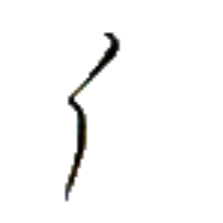
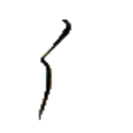
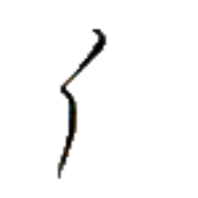

アウㇺ⤴
【傾】
[状態動詞]
傾いている
[動詞]
転ぶ、躓く
[動詞]
（数学・音楽）3分の2倍にする
我傾足受傷而三日於家無生行
パイ⤴アウㇺ⤴シー→グㇰ⤴グイ⤴ワ·オㇺ⤴キアー→イェ·ムㇳ⤴ムン→ヤン→モㇰ→
【我傾足受傷而三日於家無生行】
私は転んで足を怪我して三日家を出なかった。
傾道
アウㇺ⤴ポウ→
【傾道】
[名詞]
坂道、スロープ
刀傾
ガウ⤴アウㇺ⤴
【刀傾】
[名詞]
階段
無傾
ムン→アウㇺ⤴
【無傾】
[状態動詞]
均衡している、平等である
機刀傾
キㇰ→ガウ⤴アウㇺ⤴
【機刀傾】
[名詞]
エスカレーター
筆兵無傾
クアー⤴カウㇰ⤴ムン→アウㇺ⤴
【筆兵無傾】
[四字熟語]
書記官と兵士の力が均衡していて国家が安泰であること。緯武経文。
国の維持に重要とされ、筆と槍を図案化したシンボルが存在し、アイル共和国国章などに用いられている。
[名詞]
セッカイクの役の 1 つ
 
